더인 교육 7일차
Plasma etching principles · Etch chamber · RIE 공부하기 · Classification of Etching Reactors · CCP(Capacitively Coupled Plasma) · ICP(Inductively Coupled Plasma) · RIE vs Sputter vs PECVD · MERIE (Magnetically Enhanced Reactive ion Etching) · HDP (High Density Plasma) · ICP (Inductively Coupled Plasma) · TCP(Transformer Coupled plasma) → Ferrite ICP → SWP(Surface Wave-excited Plasma → ECR(Electron Cyclotron Resonance) · Helicon Plasma (헤리콘 플라즈마) · Pulsed Plasma · Etching Species · Boiling point of etch product · Etch Chemisrty & Reaction Mechanism · Si Etching · C/F의 비율에 따라 식각되는 정도가 다르다. · Doping effect · Effects of Process Variables · Etch Selectivity를 증가시키는 방법 · SiO₂ Etching Mechanism · Si₃N₄ Etching · Dry Etch Critical Parameters · Loading Effect · ARDE (Aspect Ratio Dependency Effect) · Profile Irregularities · Etching endpoint dtection by OES · 가스유량효과 · 기판온도효과 · RF Power · Pressure Effect · Frequency Effect · Etch Uniformity (균일도) · Uniformity의 Major Parameters · 마무리하며 · 스터디
1. Plasma etching principles
Chemical Etching
- 라디칼이 반응해서 Si +4F → SiF₄ 해서 날라가게 된다.
Sputter Etching
- Physical Etching이고 선택비가 낮다.
- m.f.p 가 확보 되어야 하기 때문에 저압에서 진행되어야 한다.
- Etch Rate이 느린 편이다.
Ion Enhanced Etching
- 물리적으로 화학 결합을 느슨하게 만들고 그곳에 라디칼이 화학적으로 반응하게 됨
Ion Enhanced Inhibitor Etching
- 폴리머를 생성하는 Gas를 사용해서 Etching 을 진행한다. 이러면 식각하는 막이 모든 곳에 다 생기는데, 수직 방향으로 있는 폴리머는 Sputtering에 의해서 제거가 된다. 하지만 측벽에는 남아있다.
- SF₆ / CFCl₃ 를 사용하면 SF₆ 만 사용했을 때보다 Undercut을 방지할 수 있다. Undercut은 측벽이 보호되지 않았을 때 일어나는 현상이니까.
- CFCl₃를 사용하면 CFₓ 계열 라디칼에 의해 폴리머 형성되고, 이게 측벽에 붙어서 식각 억제 역할을 한다.
- 이때 폴리머의 양을 조절하고 싶으면 H₂나 O₂를 사용할 수 있다. O₂를 사용하면 CO₂ 이런식으로 반응하니까 C의 양이 줄고, 폴리머의 양이 줄어든다.
Deep RIE
- Bosch Process Dr.Sammy 영상에서 배웠음
- SFₓ 계열을 사용해서 조금 에칭을 해준다. 그리고 폴리머로 증착을 해준다. 그리고 수직 방향은 etching을 진행한다. 그리고 다시 SFₓ를 사용해서 에칭.
<Dr.Sammy 내용>
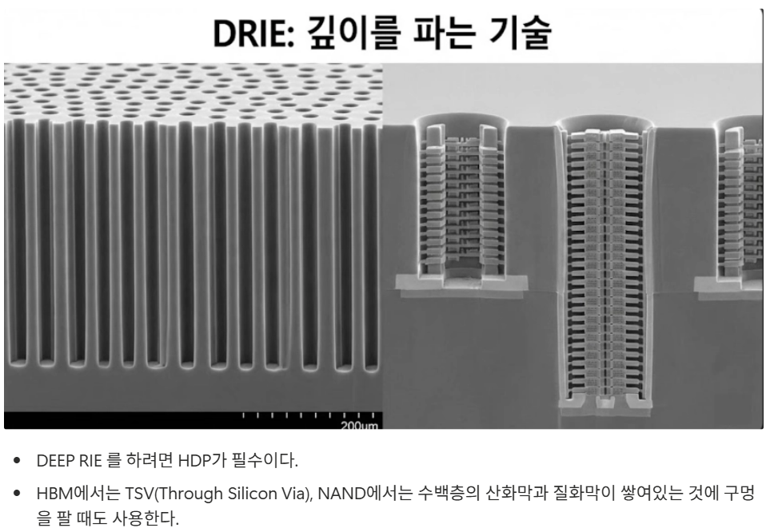
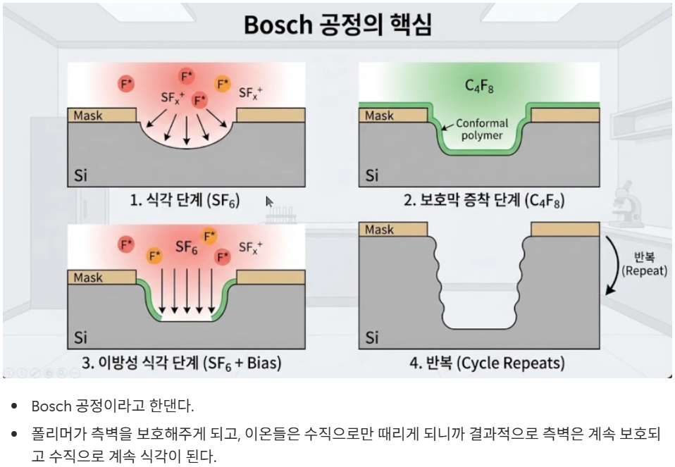
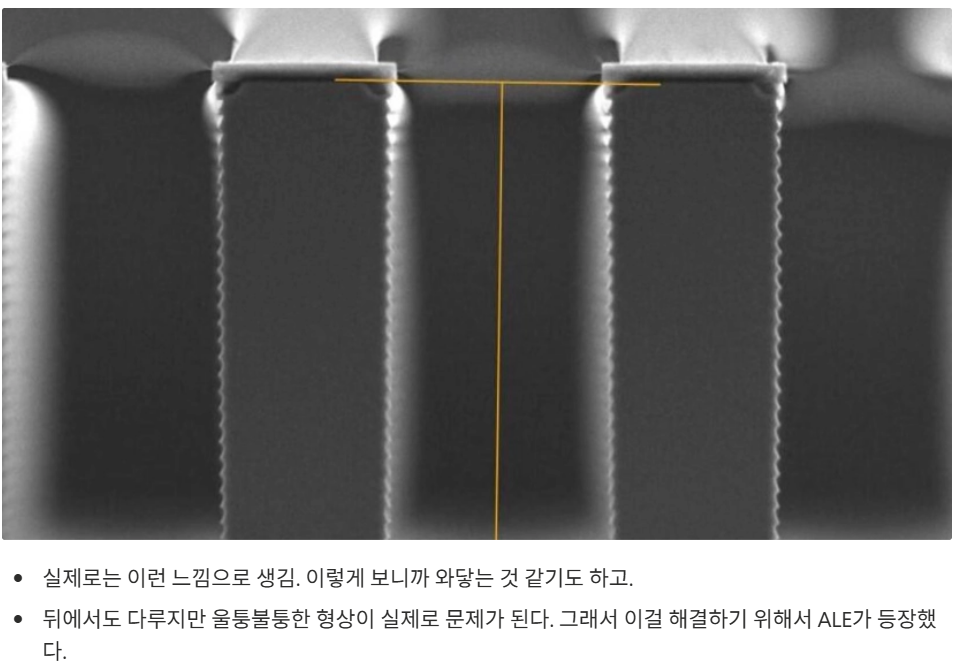
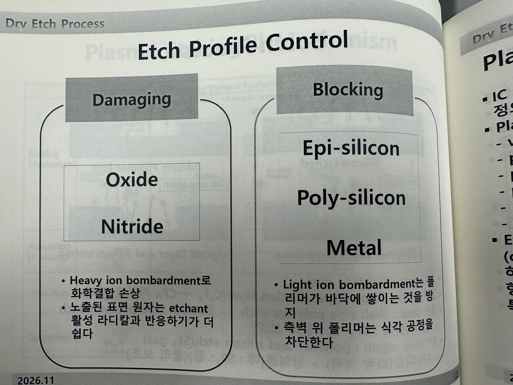
- Oxide와 Nitride는 이온 폭격 정도가 강해야지 식각이 가능하다.
→ Oxide와 Nitride는 결합이 강하기 때문에 라디칼만 사용해서 식각이 잘 안된다. 따라서 이온으로 때려줘야지 라디칼이 반응할 수 있다.
- Blocking은 polymer로 측벽을 보호해주지 않으면 이방성 식각이 어렵다. 왜냐하면 얘네는 라디칼만 있어도 식각이 되기 때문이다.
대상: “Blocking은 polymer로 측벽을 보호해주지 않으면 이방성 식각이 어렵다.”
흠…흠??
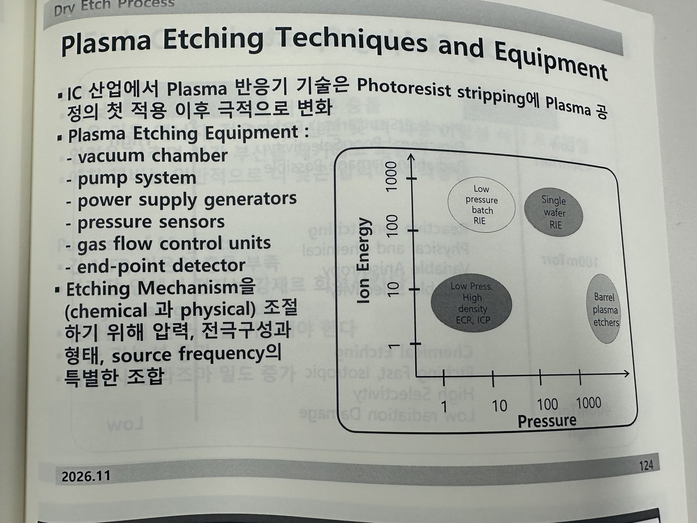
- Ion Energy는 낮아지는 쪽 압력은 낮아지는 쪽으로 변화하고 있다.
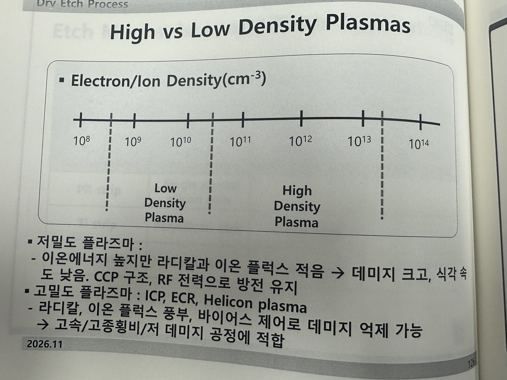
- Low Density 일 때는 플라즈마 밀도가 낮으니까 강하게 때려야했는데, 플라즈마 밀도를 높이면 덜 강하게 때려도 된다.
- High Density의 경우 bias를 따로 조절할 수 있다는 장점이 있고, 이는 이온 타격에 의해 데미지가 가해지는 것을 줄일 수 있다.
→ 예전에는 플라즈마 밀도를 높이기 위해서는 이온 타격의 세기가 강해지는 것을 감수해야했으니까
2. Etch chamber
- 결국에는 압력을 낮추려고 한다. 압력을 낮춰야지 식각 부산물 제거에도 도움이 되고, 이온 산란도 적어진다. 근데 압력이 낮아지면 gas가 적다는 것은 반응종이 적다는 것이니까 Etch 속도가 느려진다. 따라서 압력을 낮춘다면 플라즈마 밀도를 높여서 상호보완을 해줄 수 있어야 한다.
- 그런데 압력을 낮췄을 때 생기는 Trade-off 관계를 고려하지 않으면, 너무 압력이 낮아지면 아예 플라즈마 형성이 안될 수도 있다.
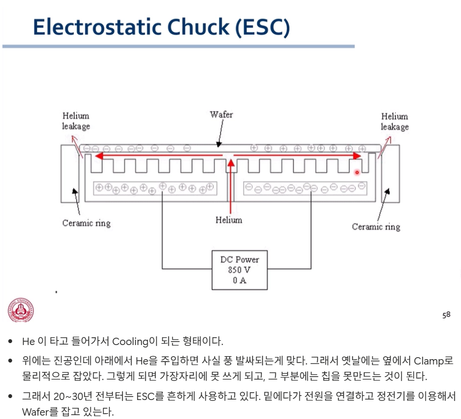
- 수업 시간에 다시 한 번 언급됨.
- 균일도를 조절한다는 것은 온도를 균일하게 만들어주는 것이다.
- 그리고 온도는 낮을 수록 좋다. 그래야 폴리머들도 낮아야 잘 붙어있지 너무 높으면 잘 붙어있기 어렵다.
ex) 극저온 식각을 하는 이유도 폴리머가 잘 붙어 있을 수 있게 해주는 것이다. 잘 붙어 있어야 보호막의 역할을 해줄 수 있는 것이다.
→ Si 기준으로는 SF₆/O₂ 조합을 사용한다고 한다. 그래서 SiF₄가 되어서 gas가 되어 날라간다. 그리고 Si 표면에 SiOxFy 가 만들어주고 이 층이 보호해주는 역할을 한다. 근데 그래서 SiOxFy가 폴리머는 아니잖아? 설명이 맞는걸까?
대상: “그리고 온도는 낮을 수록 좋다. 그래야 폴리머들도 낮아야 잘 붙어있지 너무 높으면 잘 붙어있기 어렵다.”
조금 더 과학적으로 설명을 바꿔서 메모하기
대상: “→ Si 기준으로는 SF₆/O₂ 조합을 사용한다고 한다. 그래서 SiF₄가 되어서 gas가 되어 날라간다…”
나중에 가능하면 다시 확인해보기
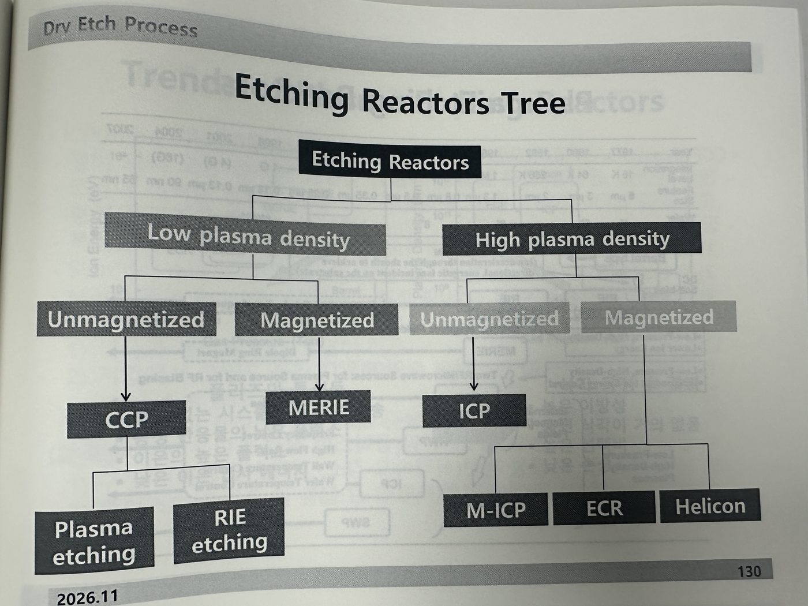
- CCP type에서 RF 코일이 어디쪽에 붙어 있는지에 따라서 Plasma etching, RIE Etching이 구분된다.
→ 아마 Plasma etching이 웨이퍼 반대쪽에 코일이 있고, RIE Etching이 웨이퍼 쪽에 코일이 있는 것 아닐까? ㅇㅇ 맞음
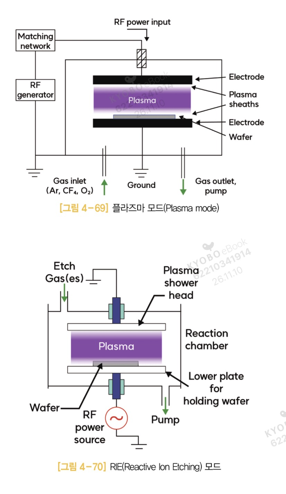
- 렛유인에 있는 교재에서는 그래서 Capacitor가 어디있으면 접지는 어떻게 되어있는지 제대로 나와있지 않아서 공부하면서 이미지를 만들었음. 이미지 조차도 정확하진 않겠지만 적어도 Self bias가 생기는 지 정확히 짚고 넘어가기
3. RIE 공부하기
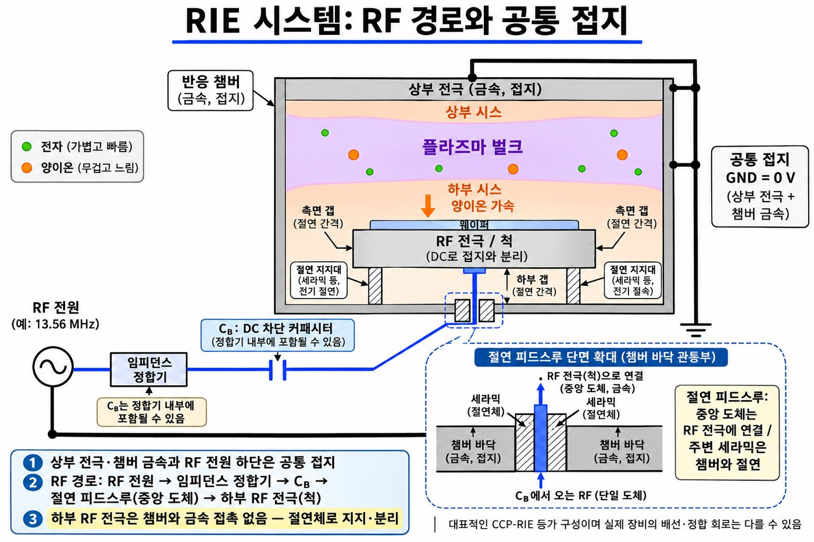
- RF는 Wafer 쪽에 걸려있다. Wafer에 들어오는 전자는 Capacitor 전극 쪽 판에 쌓여서 빠져나가지 못한다. 전자가 유전체(절연체)를 뚫고 갈 수가 없잖아? 그렇기 때문에 반대쪽 (+)가 쌓이는건 전자가 쌓인 결과로 일어나는 상황이다.
- 반대편은 접지 되어 있어서 전극으로 전자가 들어가도 빠져나갈 것이다. 그러니까 0V가 되는 것이다.
- 결국에 전극에 전자가 쌓이게 되는 것은 질량이 가볍고, 그에 따르게 RF 파워가 인가됨에 따라 전기장에 따라 빠르게 움직이기 때문이다. 그리고 Blocking Capacitor가 있어야한다.
- 계속 헷갈렸던 Capacitor에 대해서. 웨이퍼 쪽 판은 평균적으로 계속 (-)이고, 맞은편은 평균적으로 계속 (+) 이다.
4. Classification of Etching Reactors
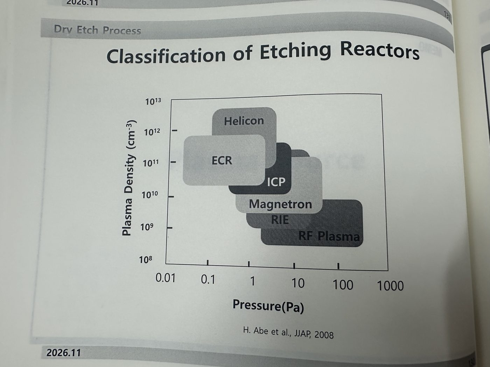
- 일단 Low plasma density 일 때부터 제대로 이해하고, How plasma density가 왜 필요한지 안 다음에 각 항목들에 대해서 이해해라!
- 압력은 낮아지는 쪽 플라즈마 밀도는 높아지는 쪽으로 발전됐다. 이런게 별거 아닌 것 같은데 머릿속에 이런 지식이 있는 사람과 없는 사람은 분명하게 차이가 난다.
- 결국에 높은 이방성을 갖고, 높은 선택비를 갖으며, 손상이 적기를 바라기 때문에 이런식으로 발전이 이루어졌다.
5. CCP(Capacitively Coupled Plasma)
- Coupled 라는 것은 “결합된” 인데, 그냥 앞 뒤를 연결하는 즉 ~를 이용한 Plasma이다 라는 의미이다.
- Capacitor 자체도 위 아래 전극이 존재하고, 유전체가 가운데에 있는 구조인데, CCP도 결국 챔버 안에 상부 전극과 하부 전극이 있다. 그리고 그 가운데에 유전체(?)가 있다.
- 전극간 거리가 1~10cm로 내 생각보다 가깝다.
- CCP는 이온화 에너지도 상당히 크고, 균일한 플라즈마가 형성된다고 한다.
- 하지만 RF power가 한 개이다 보니 이온 충격과 밀도가 따로 조절이 어렵다.
- 웨이퍼에 충돌하는 이온 에너지는 줄이고 싶고, 플라즈마 밀도는 높기를 원하는 상황인데 이게 연동해서 되기 때문에 잘 안된다.
→ 그래서 Dual RF 를 걸어서 개선하려고 하지만 일반적인 CCP는 RF power는 한 개뿐이다.
대상: “Capacitor 자체도 위 아래 전극이 존재하고, 유전체가 가운데에 있는 구조인데, CCP도 결국 챔버…”
유전체는 아닐 것 같은데, 그럼 뭐지? 유전체 일 수도 있나? 공기도 유전상수가 1인 기준이 되긴 하잖아
플라즈마가 형성되지 않은 상태에서 Gas만 들어가 있으면 그것도 유전체라고 볼 수 있을 것이다. Claude가 말하기를 플라즈마가 형성되면 그때는 도체?라고 하긴 하는데 애매하다.
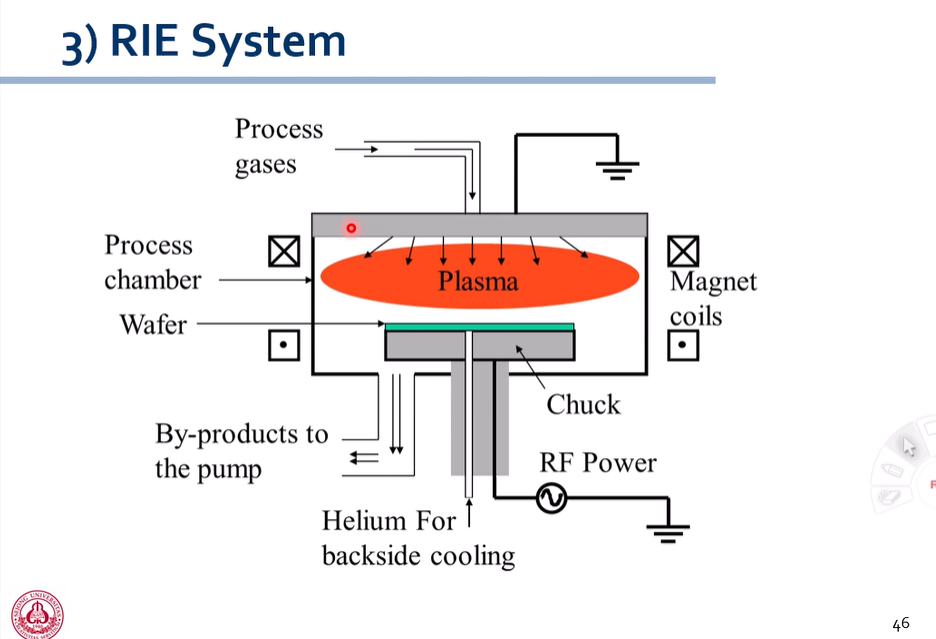
- 사실 이 그림은 MERIE로 RIE의 한 예시이다. RIE이긴 하지만 Magent coil이 있으니까!
- 실제로 전극 면적의 차를 통해서 접지하는 곳을 크게 해주는데, 그냥 전극만 크게 해주는게 아니라 chamber 자체를 접지 시켜주고 웨이퍼가 올라가는 곳은 작게 만들어준다.
6. ICP(Inductively Coupled Plasma)
- 코일을 통해서 유도 자기장을 형성하고, 유도 전기장이 형성 → 고밀도 플라즈마 형성
<세종대 이원준 교수님>


- 결국 플라즈마는 코일이 감겨져 있는 곳 위치에서 발생하게 된다.
→ 당연한 소리 근데 이원준 교수님이 첫번째 사진처럼 되어있기 보다는 위에 모기향처럼 되어있다고 했음. 실제 클린룸에서는 공간을 덜 차지해야하니까
- 결국 저압으로 만들고 싶은데 플라즈마 밀도가 감소하는 문제를 코일을 사용해서 플라즈마 밀도와 이온 충격을 구분해서 나눌 수 있게 되었다. (반복 또 반복..)
- CCP에 비해서 플라즈마 자체의 균일도는 떨어진다고 한다. (Trade-off..) 왜냐하면 코일 근처에서만 플라즈마가 형성될 테니까.
→ 조금 더 깊이 파보자면 ICP는 Skin 깊이 만큼만 플라즈마가 주로 생성된다고 함
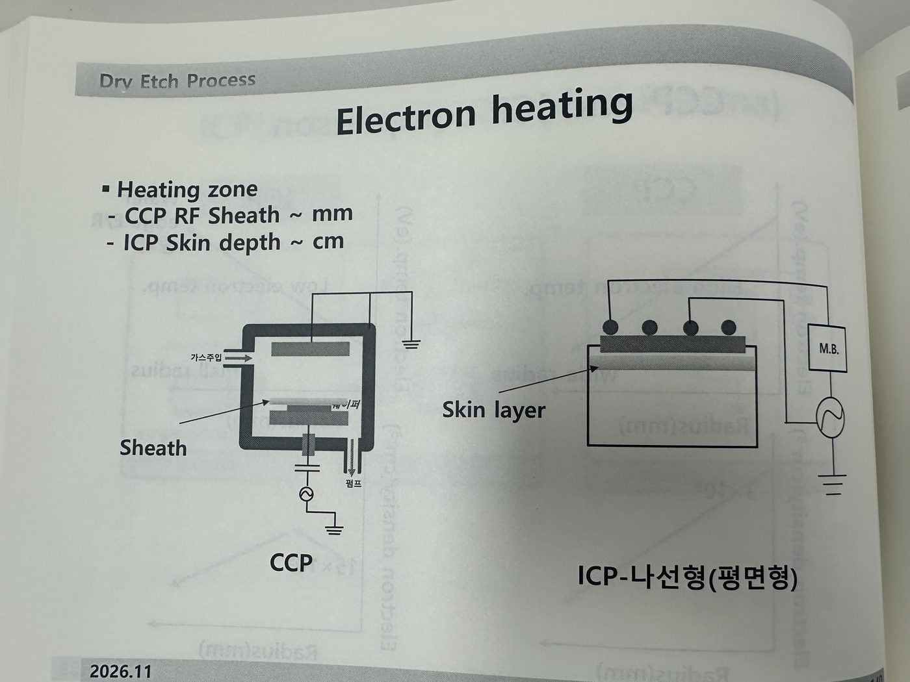
- ICP는 코일에 의해 플라즈마가 이와 같이 형성되기 때문에 스킨 깊이를 깊게 하려고 한다.
- CCP 는 RF 파워 하나에 의해서 Self bais도 걸리게 되는 것이고, ICP에서는 RF 파워 한 개는 플라즈마 형성, 나머지 RF 파워에 의해서 Self bias가 걸리게 되는 것이다. (순간 ICP는 Self bias가 안걸린다고 착각)
대상: “ICP는 코일에 의해 플라즈마가 이와 같이 형성되기 때문에 스킨 깊이를 깊게 하려고 한다.”
이런건 전에 생각도 못해봤을 듯
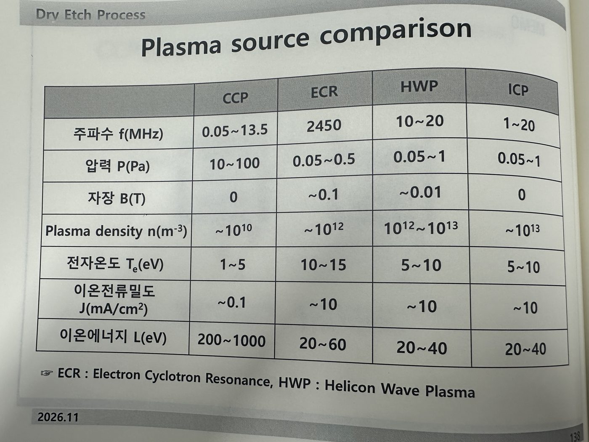
- 결국 전체적인 흐름은 플라즈마 밀도를 높이는 방향, 그리고 이온에너지를 낮추는 방향으로 발전했다.
- CCP에서 이온에너지가 높을 수 밖에 없는 것은 어쩔 수 없이 RF 파워 한 개로 플라즈마를 형성하는 방법의 한계
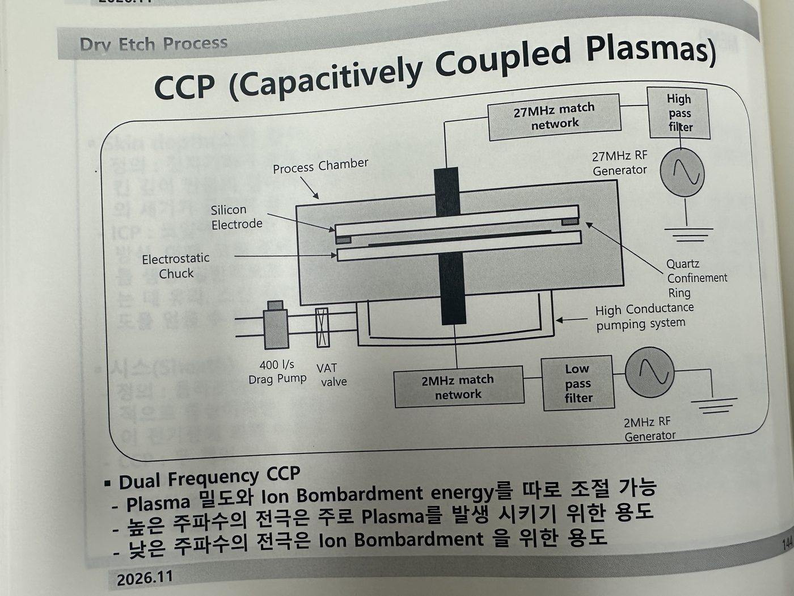
- 근데 또 웃긴게 CCP에도 RF 파워를 두 개 걸어줄 수도 있다고 함.
- 근데 이 때 웨이퍼쪽에 이온충격을 가해주는 쪽은 낮은 주파수가 걸리긴 한다. 위에는 플라즈마를 형성하기 위해 높은 주파수를 사용한다. 결국 따로 조절하기 위함이다.
대상: “근데 또 웃긴게 CCP에도 RF 파워를 두 개 걸어줄 수도 있다고 함.”
ICP와는 분명 다른데, CCP에서 RF 가 따로 걸리면 둘이 겹치지 않고 가능한거야?
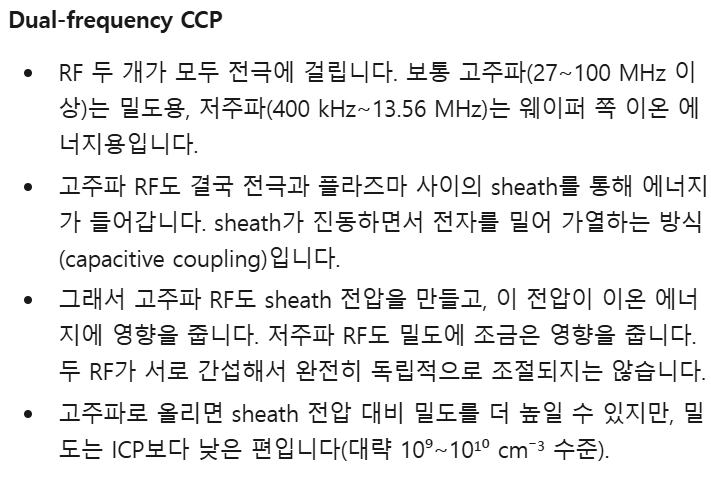
- 결국 예상한 것처럼 CCP 에서는 구분해서 사용하지만 서로가 완전히 독립적이라고 말하기는 어렵다. 서로가 간섭하는 상황이 생긴다는 것이지.
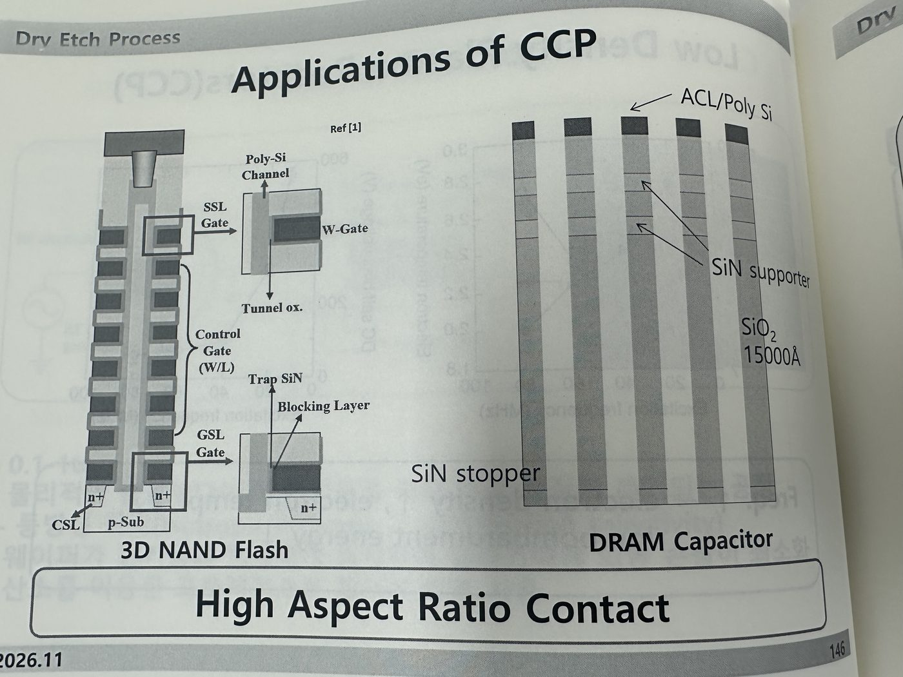
- 그래서 결국 사용하는 곳은 Metal gate?
- DRAM Capacitor가 SiO₂로 길게 서있는데, 이걸 Etching을 잘해줘야 하고, 이 때 SiO₂를 Etching 하기 위해서 필요하다?
- Si₃N₄는 왜 필요한지 알고 있고, 그게 왜 무너지는지는 세정하고 말리는 과정에서 서로 붙어버리기 때문에 막기 위해 저렇게 물리적으로 잡아주는 것임. 표면 장력이 존재하고, 서로 건조시키면서 표면적을 적게 하려고 하고? 서로 붙어버리게 된다.
- 각 단위 공정은 세정팀은 초임계유체를 만들자! 라는 cleaning 을 잘하려고 했지만, 결국에는 Si₃N₄ 를 이용해서 잡아주게 되었다. 그러니까 각 단위공정을 잘하는 사람은 자기껏만 잘하려고 한다는 것이지.
대상: “각 단위 공정은 세정팀은 초임계유체를 만들자! 라는 cleaning 을 잘하려고 했지만, 결국에는 Si₃…”
아는 만큼 보인다는게 이런 말인 듯하다. 이거 Dr.Sammy 영상 안봤으면 어떻게 아는데?
<Dr.Sammy>
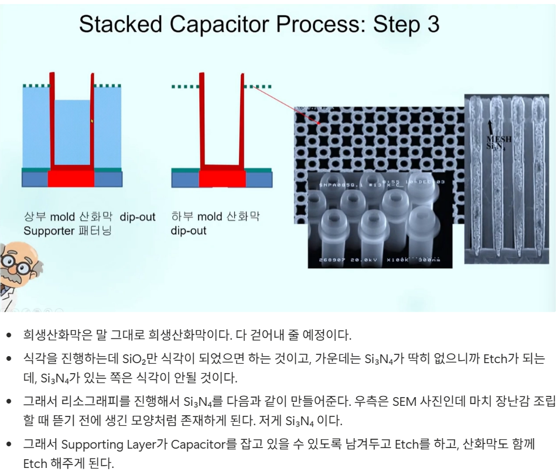
7. RIE vs Sputter vs PECVD
- 전부 CCP type이지만 사용 용도가 다르고, 어떻게 다른지를 설명할 수 있어야한다.
- RIE 경우에는 전극 크기 차이를 이용해서 Self Bias를 걸어준다. 그래서 wafer 쪽 말고 반대를 쫙 감싸는 챔버를 Ground 에 접지 시켜둠
- Sputtering Wafer 쪽은 챔버를 접지 시킨다. 그리고 Target 쪽 면적이 작고 식각은 아니지만 이온 폭격이 Target 쪽으로 일어날 수 있게 해준다.
- PECVD 는 플라즈마를 이용해서 화학 반응을 일으킨다.
8. MERIE (Magnetically Enhanced Reactive ion Etching)
- RIE 공정에서 발전시킨 형태
- 챔버 위쪽에서 전자를 컨트롤해서 고밀도 플라즈마를 형성하게 해준다.
- 균일도를 높이기 위해서 기판을 회전 시켜준다.
9. HDP (High Density Plasma)
- 공정 압력을 낮추고 싶었고, 낮출 수 있게 되었다. (m.f.p 확보)
- 플라즈마 밀도를 높이고 싶었고, 높일 수 있게 되었다.
- 이에 따라 식각속도(?), 선택비가 좋아졌다.
10. ICP (Inductively Coupled Plasma)
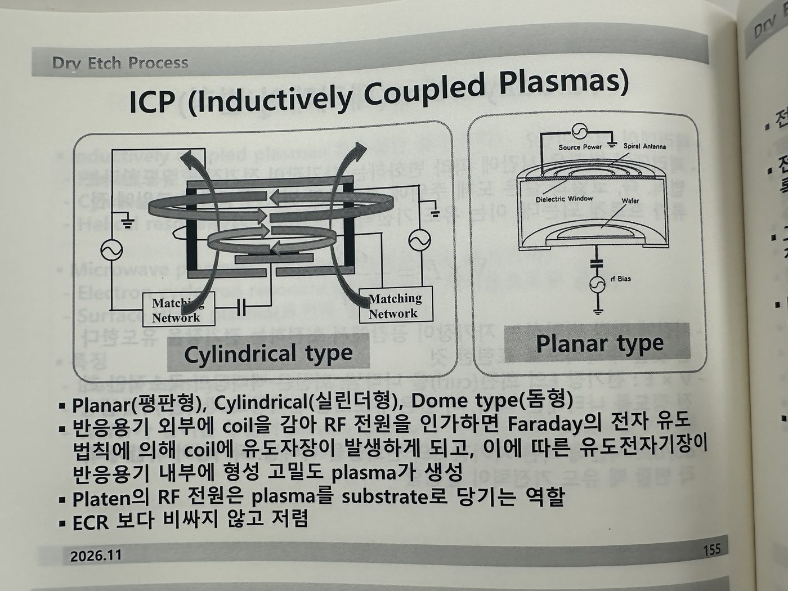
- 자기장 전기장에 의해서 전자들이 가속되고 이온화되고 플라즈마가 형성된다.
패러데이 법칙
- 코일에 전류가 흐르게 되고, 유도 전기력이 발생하게 된다.
- 이걸 이용한 ICP 방식에는 Cylindrical type(실린더 형)과 Planar type(평면 형)이 존재한다.
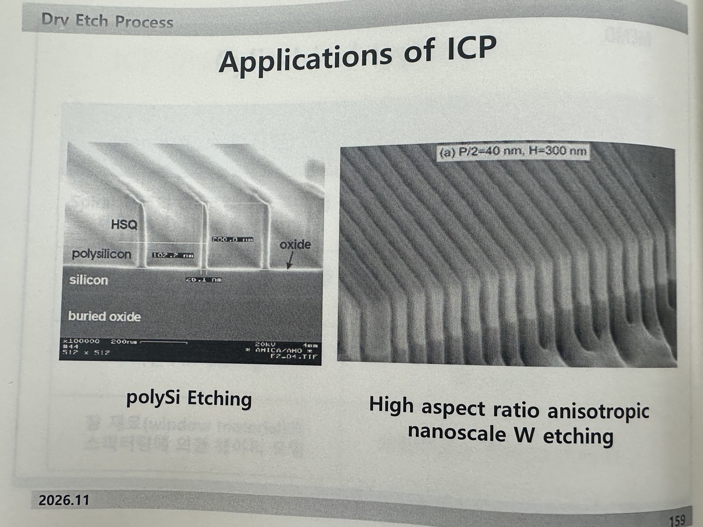
- Metal이나 Silicon을 고밀도 플라즈마를 사용해서 Etching 하더라
11. TCP(Transformer Coupled plasma) → Ferrite ICP → SWP(Surface Wave-excited Plasma → ECR(Electron Cyclotron Resonance)
- 기존의 ICP를 개선하기 위해서 사용하는 방법들이다.
- Ferrite ICP는 페라이트라는 강자성체를 활용해서 수직인 방향으로 전기장이 발생하게 한다.
- SWP는 Microwave를 사용한다? 유전체를 사용한다? 이온 충격 에너지는 줄이고 플라즈마 밀도는 높인다.
- ECR이라는 방식은 장비가 엄청 크고 복잡하다고 한다. Microwave를 사용한다. Magnetic coil에 의해서 수직인 전기장이 형성된다. 이것도 결국 고밀도 플라즈마.
12. Helicon Plasma (헤리콘 플라즈마)
- 특정 부분에 플라즈마 밀도를 집중시키기 위해서 사용한다.
- 이렇게 플라즈마를 형성하려면 안테나를 사용해야한다.
- 전자가 자기장에 의해 회전하다가 헬리콘 wave를 타는 듯한 느낌?
13. Pulsed Plasma
대상: “Pulsed Plasma”
여기 내용은 책 보면서 다시 천천히 공부하기
- 선택비를 개선하고, 플라즈마 손상을 줄이기 위해
<Dr.Sammy>
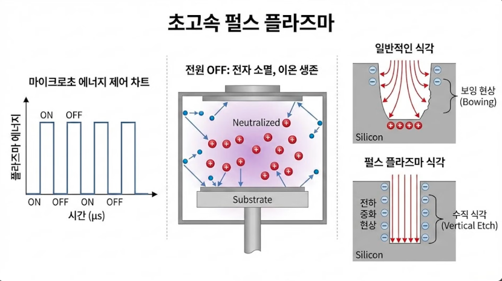
- 측벽에는 (-) 전하가 쌓이게 되고, 바닥에는 (+)전하가 쌓이게 된다. 이에 따라 양이온이 휘게 되고 Bowing이 생기게 된다. (측벽을 때리게 된다)
- 그래서 펄스의 형태로 RF 파워를 걸어주게 되면 RF가 꺼진 사이에 전자들이 무작위로 돌아다니다가 구멍안에 들어오고 그게 바닥에 있는 (+)를 만나서 중화시키게 된다.
→ 이 설명은 정확하지 않을 수도 있긴 할 듯 수업 때 놓쳐가지고..
대상: “그래서 펄스의 형태로 RF 파워를 걸어주게 되면 RF가 꺼진 사이에 전자들이 무작위로 돌아다니다가 구멍안…”
이 설명이 맞는지는 다시 한 번 확인해봐야 할 듯
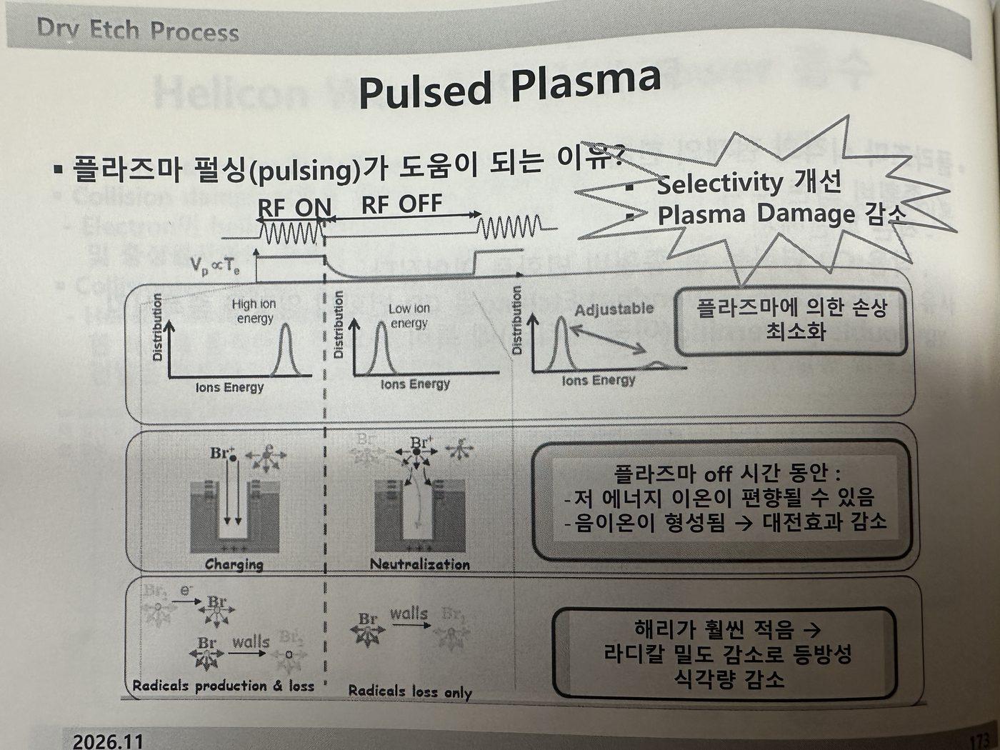
Bias를 on/off 했을 때
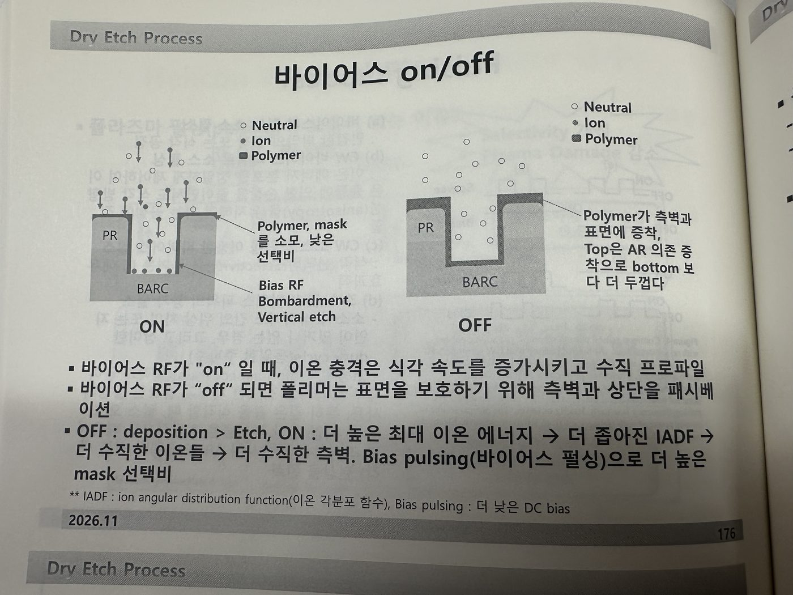
- 전기장이 꺼진 상태이면 polymer가 많이 쌓인다.
- 전기장이 켜진 상태이면 polymer가 쌓여도 이온 폭격으로 인해 etch가 된다.
– pulsing을 하게 되면 더 큰 에너지가 가해지게 할 수 있다. 끄고 나서 켰을 때의 이온화 에너지가 강하다고 한다.
14. Etching Species
- 도입되는 기체, 라디칼, 반응성 이온
- 반응성 이온에는 주로 Positive 이온이 있다.
항상 식각을 할 때는 대상이 식각이 잘 되는지 뿐만 아니라 선택적으로 식각이 가능해야됨
끓는 점을 통해 휘발성을 확인해야 한다.
B.P가 낮다는 것은 식각이 잘되고, 높다는 것은 식각이 잘 되지 않는다는 것이다.
대상: “항상 식각을 할 때는 대상이 식각이 잘 되는지 뿐만 아니라 선택적으로 식각이 가능해야됨”
당연하지만 이런걸 배워가면 좋다
15. Boiling point of etch product
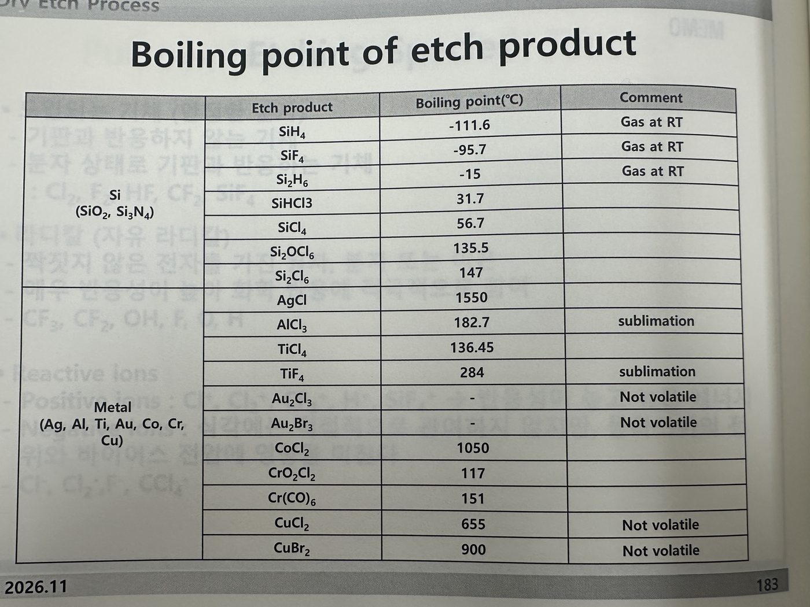
- 휘발성이 낮거나, 흡열 ΔH>0 반응이면 잘 일어나지 않는다. 휘발성과 열역학적으로 어떻게 되는지 고려해야 한다.
16. Etch Chemisrty & Reaction Mechanism
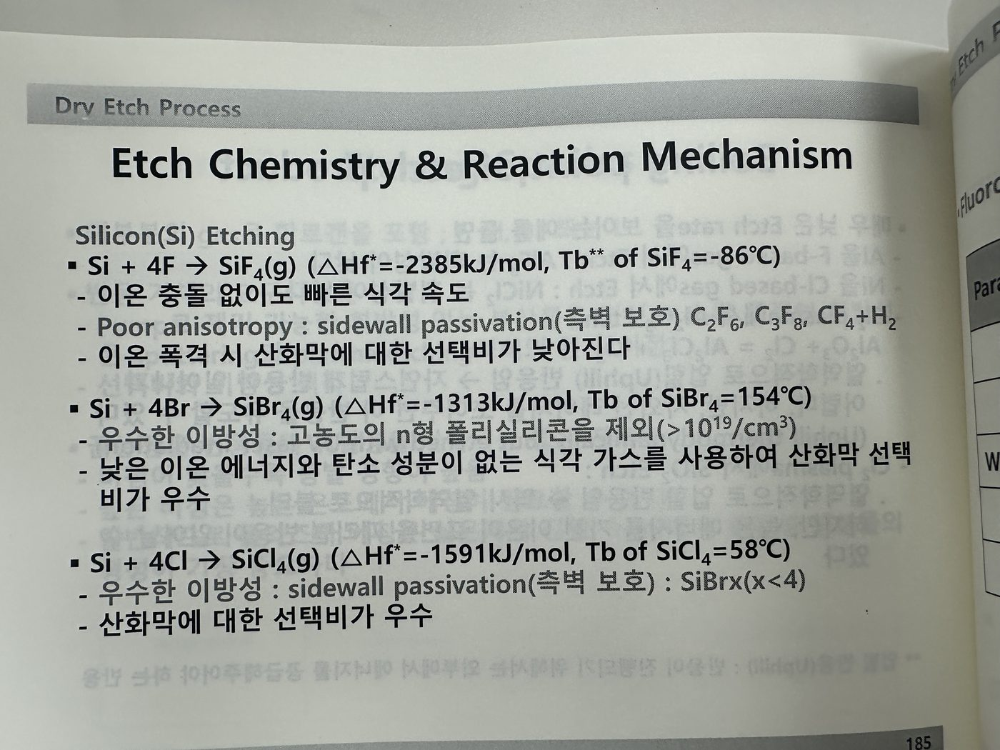
- SiF₄ 같은 경우는 Boiling Temp가 굉장히 낮고 식각이 잘된다.
- Si에서 F gas를 쓸 때 Poor anisotropy?
대상: “Si에서 F gas를 쓸 때 Poor anisotropy?”
여기 한 번만 다시 찾아서 보기
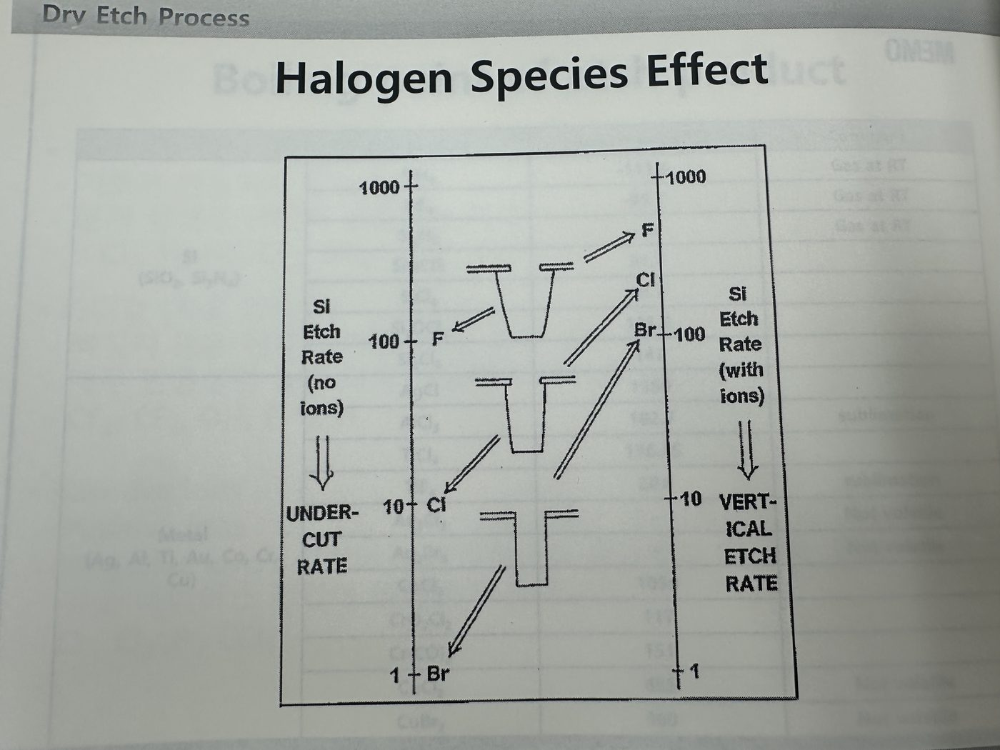
- 이온 폭격 없이 진행하게 되면 이방성을 확보하기가 어렵다. (=라디칼의 화학적인 반응만 이용하면)
슬라이드 187pg
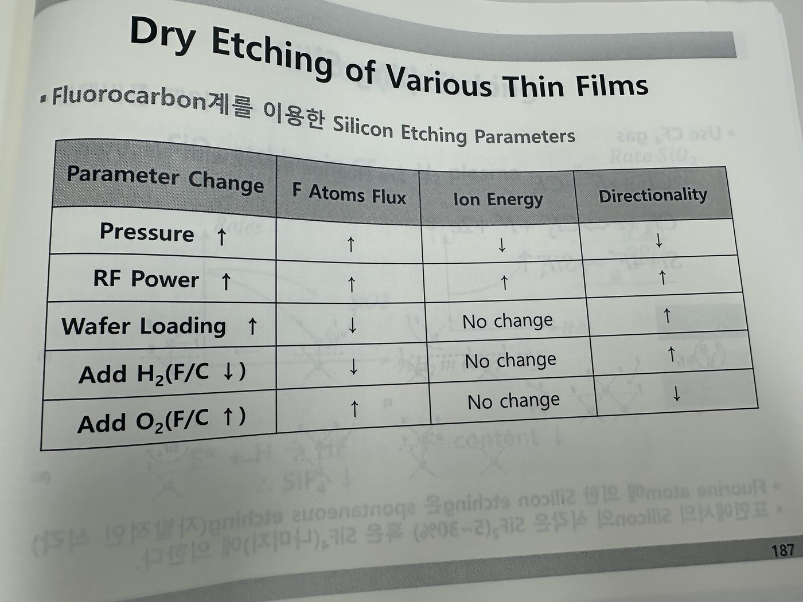
(1) 압력이 높아지면 F atom이 많아지면 이온이 때리는 힘이 낮아지고 이방성이 안좋아진다.
(2) RF power가 커지면 F atom도 많아지고 이온이 때리는 힘이 좋아지고 이방성도 좋다.
(3) Wafer Loading
(4,5) F/C 비율은 조절이 가능하다.
- CxFy랑 H₂가 만나면 HF가 많아진다. → C 비율이 커진다.
- CxFy랑 O₂랑 만나면 COₙ이 많아진다. → F 비율이 커진다.
17. Si Etching
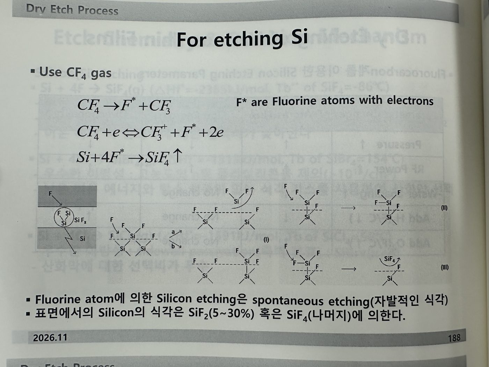
- SiF₄는 휘발성이 매우 좋다.
- SiF₂는 5~30% 만들어지고 SiF₄가 대부분 만들어진다.
18. C/F의 비율에 따라 식각되는 정도가 다르다.
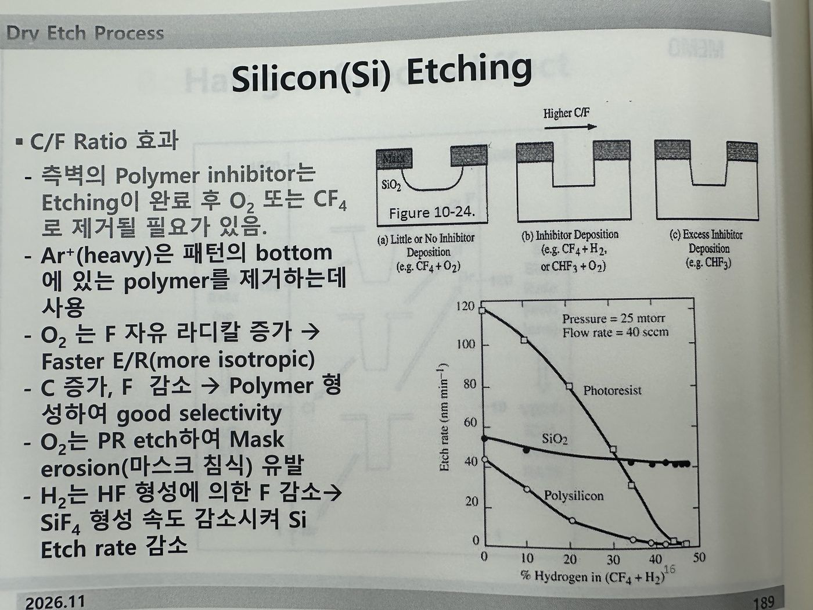
- polymer를 많이 생성할 수 있게 해주면 등방성 식각보다 이방성이 식각이 가능하다. 측벽 passivation이 되기 때문이다.
- 근데 C가 너무 많이 생기면 (CHF₃)의 경우 양쪽 측벽을 너무 보호해주기 때문에 식각 프로파일이 맨 오른쪽처럼 된다.
- H₂의 양이 늘어나게 되면 HF가 많이 생성되고, C의 비율이 커지게 된다.
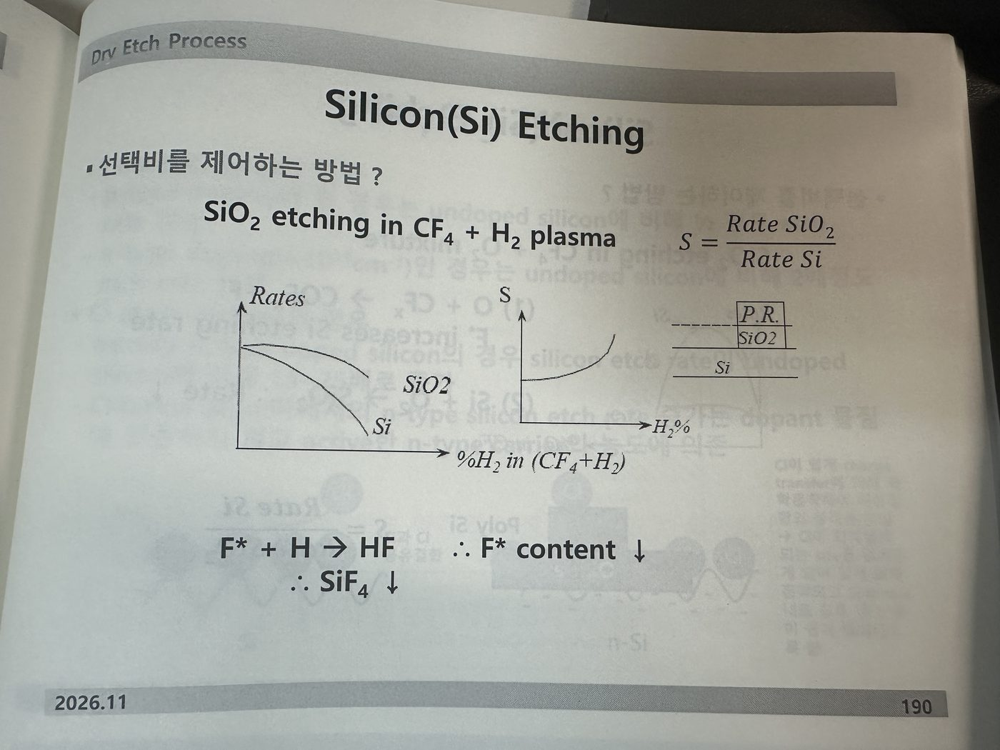
- Si와 SiO₂가 있을 때 Si가 식각이 잘 안되게 만들고 싶은 상태이다. 그래서 좌측에서 Si의 식각속도가 떨어지는데 이는 H₂를 넣어서 CF₄에서 F를 붙잡아 HF를 형성하게 한다. 그러면 Si는 F 와 반응해서 식각하는데 F의 양이 줄었으니 Si의 식각 속도가 느려지는 것이다.
- SiO₂ 자체는 식각속도의 변화가 크지 않다.
Q. 왜 SiO₂ 자체의 식각속도 변화는 크지 않은지?
A. Si는 F 원자가 식각하고, SiO₂는 이온 충격과 CFₓ가 식각하기 때문입니다. H₂는 F만 줄이니 Si만 크게 느려지고 SiO₂는 별로 영향을 받지 않습니다.
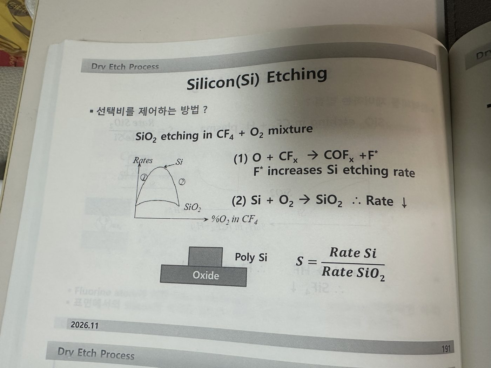
- CF와 O₂는 C가 없어지게 되고 F의 양이 늘어나게 된다. SiO₂는 앞에서도 그렇고 여기에서도 그렇고 민감하지 않기 때문에 잘 변하지 않음. But F의 양이 늘어나니까 Si와 식각되어서 사라지는 속도가 빨라짐.
- 근데 O₂를 적당히 넣어야지 어느정도 이상되면 Si가 O₂랑 반응해서 SiO₂가 생성되기 때문에 포물선 그림을 그리게 된다. 따라서 최적의 지점을 찾아야 함.
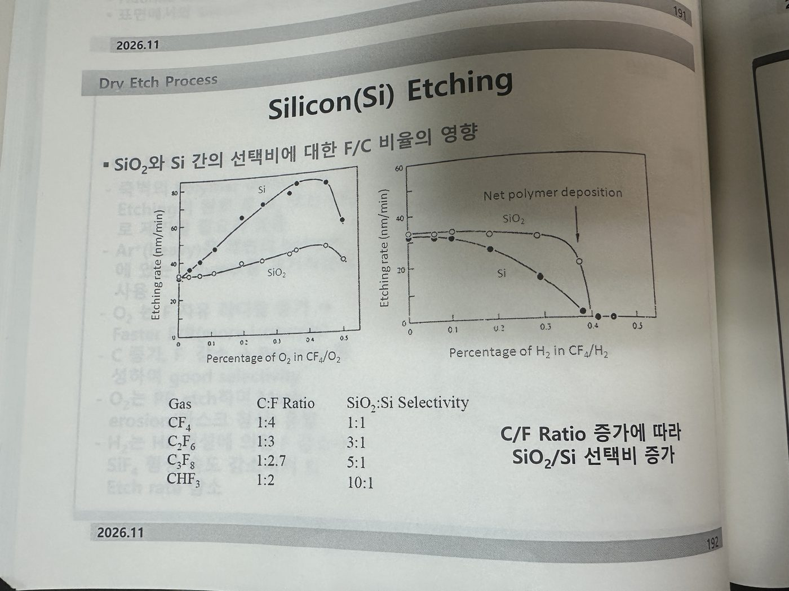
- 결국 여기에서도 무조건 좋은 건 없고, 적당히 최적의 조건을 찾는 게 중요하다.
- 이렇게 Gas 에 따라서 식각비를 조절할 수 있다.
- CHF₃에서 H와 반응해서(?) F가 빠져 CF₂가 만들어진다.
193pg
19. Doping effect
- 아 ~ 이런게 있구나
20. Effects of Process Variables
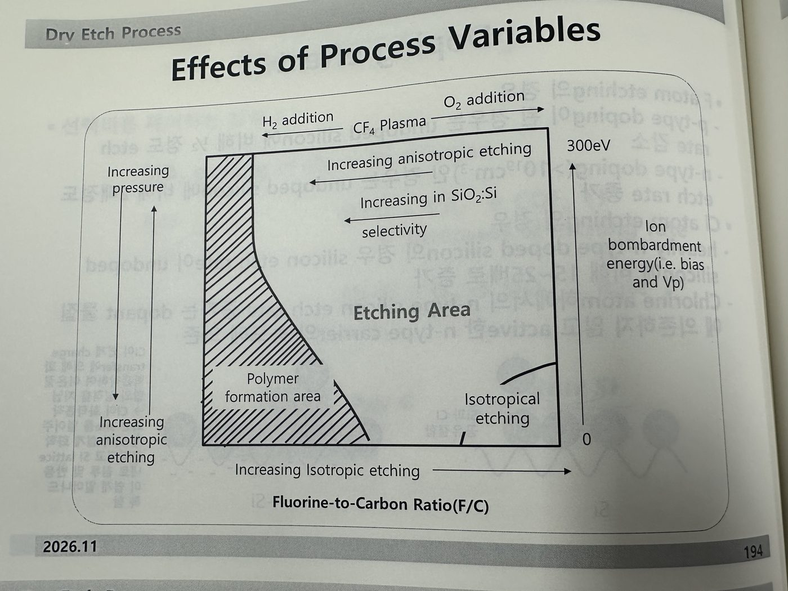
- Silcon Etching 시에 중요한 파라미터를 알 수 있다.
- C가 많아지면 polymer가 많아져서 etching이 잘 안됨. 그래서 polymer가 많아지면 측벽 보호가 되니까 이방성이 좋아진다.
- F가 많아지면 식각이 잘되는 것이고. (Si랑 만나서 F가 사라지니까)
21. Etch Selectivity를 증가시키는 방법
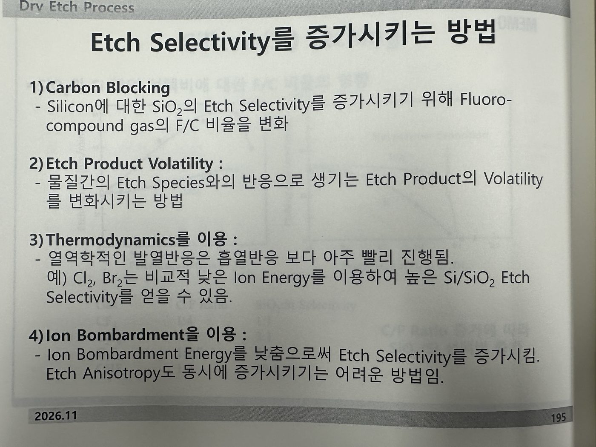
(1) Carbon Blocking
- F 많 → Si 에칭 많 / F 적 → Si 에칭 적 : 이 자체가 F/C 비율을 변화시키고 있는 것임
(2) Etch Product Volatility
- 반응 부산물의 휘발성을 따져본다.
(3) Thermodynamics
- Cl₂, Br₂는 흡열 반응이라 반응이 자발적으로 잘 일어나지 않는다.
(4) Ion Bombardment
- 이온 충격 에너지도 낮추는 방향으로 식각 선택비를 증가시킬 수 있음. 하지만 이온 충격 에너지를 낮춘다는 것은 이방성이 약해진다는 것과 같은 말이다.
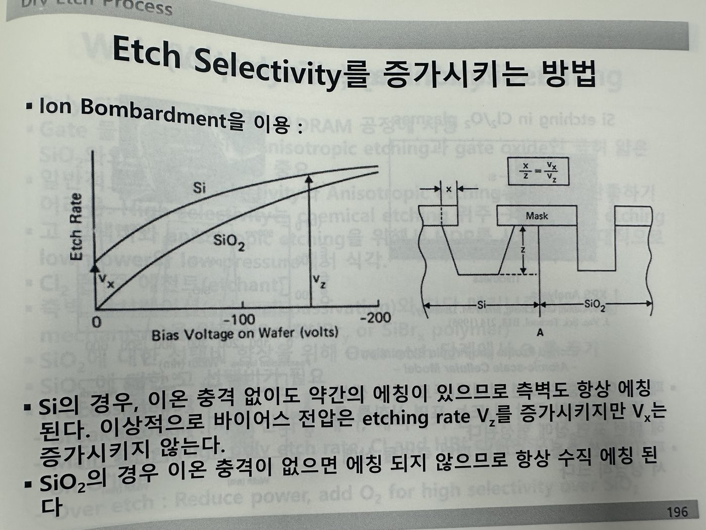
- Si는 이온 충격 없이도 etching이 가능하지만 SiO₂는 그렇지 않다. SiO₂는 강한 결합으로 이루어져 있기 때문에 그렇다. 따라서 Ion 폭격을 같이 적용해줘야 한다.
- Si의 경우에는 등방성 식각이 일어날 가능성이 크다, 하지만 SiO₂는 크렇지 않다.
197pg
- 측벽에는 …? 졸아버렸
198pg, 199pg
- Si₃N₄는 하드마스크로 사용한다.
- 그럼왜 F 를 안쓰냐? 라고 하면 Etch 가 너무 잘되어서 등방성 식각이 된다.
202pg
- SiO₂는 Cl을 써서는 식각이 잘 이루어지지 않는다.
- SiO₂를 식각하려면 CFₓ를 사용해서 식각을 해준다. Si와 선택비가 갈린다?
대상: “Si는 이온 충격 없이도 etching이 가능하지만 SiO₂는 그렇지 않다. SiO₂는 강한 결합으로 이…”
이 부분도 생각 못해본 부분
대상: “SiO₂를 식각하려면 CFₓ를 사용해서 식각을 해준다. Si와 선택비가 갈린다?”
중간에 흐름이 끊겨서 그런지 헷갈리네 다시 복습하면서 이쪽 파트 사진 추가하고 정리하기
결국 폴리머를 생성해서 Si 쪽은 식각이 덜 되게, SiO₂ 쪽이 식각이 잘 되게 세팅하려고 하는 거겠지? (확인 필요)
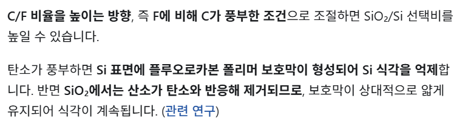
22. SiO₂ Etching Mechanism
- CF₄에서 CxFy 라디칼이 형성 → C₂F₄와 같은 폴리머-SiO₂ 결합물이 생김 → 이온 sputtering을 진행하면 CO₂, SiFₙ 기체로 휘발되며 식각이 되는 것이다.
- (206pg) Si와 SiO₂ 쪽이 상황이 다른데, SiO₂ 쪽이 더 얇기도 하고, 이쪽이 식각이 된다고 함. Si 쪽은 폴리머 자체가 매우 두껍게 형성되다 보니 식각이 안되는 것이라고 함.
207pg
23. Si₃N₄ Etching
대상: “Si₃N₄ Etching”
Si, SiO₂, Si₃N₄ 까지 순차적으로 잘 이해하고 외우면 될 듯함. 이걸 외워두면 식각을 합니다. 라고 할 때 이건 어떤 gas로 etch하면 되고 그 때 선택비를 늘리기 위해서는 어떻게 할 수 있겠다. 이런 걸 생각할 수 있게 될 것임. (아는 만큼 보일테니 공부해라 마치 지구과학)
- Si₃N₄는 S와 SiO₂ 중간 성질을 갖고 있다.
- 하하하 집중력 떨어짐;
212pg
24. Dry Etch Critical Parameters
- 여기에서 얼마나 내가 설명할 수 있는지가 곧 엔지니어로서 역량이 되는 것임. 물론 지금 당장은 아니더라도 보고서는 설명할 수 있어야겠지?
213pg
(1) Linewidth control
(2) Directionality control
(3) Slelectivity control
- 물질 간의 sputter 정도의 차이가 난다.
25. Loading Effect
(1) Macro-Loading Effect
- 식각해야하는 면적이 커지게 되면서 반응물의 농도가 부족하게 되면서 식각속도가 줄어든다.
- 해당 현상은 반응물의 농도가 충분해질 수 있게 고압을 가하거나, 높은 소스 파워를 가해준다.
(2) Micro-Loading Effect
- 이건 밀도와 관련된 얘기
(3) RIE lag
- 패턴이 좁고 깊은 구조에서는 반응물이 바닥까지 도달한 다음 부산물이 밖으로 빠져나오는게 어렵기 때문에 생기는 현상이다.
(4) Inverse RIE lag
- 이건 폴리머가 충분히 보호해주지 못해서 오히려 좁고 깊은데가 더 빨리 식각되는 경우이다.
- 그래서 polymer가 잘 증착되지 않는 곳 말고, 잘 증착되는 곳에 쌓이는 폴리머의 양을 줄여서 식각속도 차이를 줄일 수 있음.
26. ARDE (Aspect Ratio Dependency Effect)
- 결국 구멍이 작으면 반응물이 들어가기도 어렵고, 반응한 부산물도 나오기 어렵다.
- 중성 gas들이 좁은 곳으로 잘 들어가기도 어렵다.
- Differential charging 현상은 마스크에 전하가 쌓이고 이에 따라서 문제가 생긴다?
27. Profile Irregularities
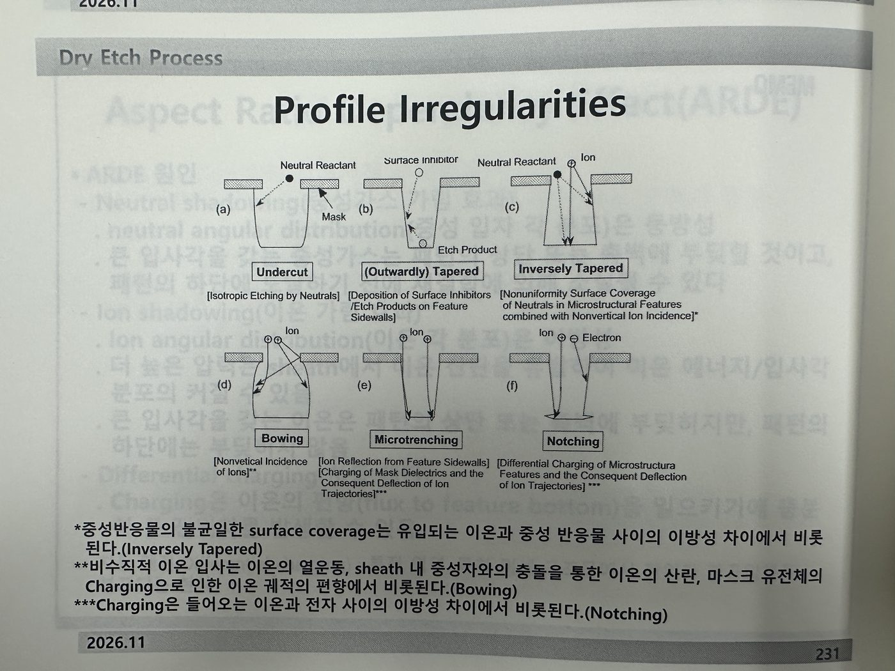
28. Etching endpoint dtection by OES
- 빛의 파장대를 통해 유추해서 알아낸다
- 원래 존재했던 intensity가 확 낮아지고 새로운 peak가 발견될 때 원래 있던 Layer가 etching이 되었구나라고 생각할 수 있음
29. 가스유량효과
- 초기에는 가스 유동속도가 증가함에 따라 식각 속도가 증가하다가, 가스 유동 속도가 과잉 상태가 되면 식각 속도는 감소한다.
→ 아마 m.f.p 때문에?
30. 기판온도효과
- 기판의 온도가 높으면 식각속도는 빨라질 수 있어도, 식각선택비는 감소하게 된다.
- 기판의 온도가 낮으면 polymer가 잘 부착될 수 있고, 잘 보호해줘서 이방성이 높아지게 된다.
- 기판의 온도가 올라가면 PR가 변형될 수 있다. 기판의 온도는 이온 폭격에 의해서 올라갈 수 있다.
- F 원자와 같은 경우에는 표면 형상에 영향을 미칠 수 있다?
31. RF Power
- RF Power가 강해지면 Etch rate은 올라가지만 선택비 측면에서는 안좋아지는 결과
32. Pressure Effect
33. Frequency Effect
- Frequency가 너무 높기 때문에 이온이 Sheath를 통과할 시간이 충분하지 않다.
Slide 243, 244pg 는 숙제
34. Etch Uniformity (균일도)
대상: “Etch Uniformity (균일도)”
Wafer의 Uniformity를 어떻게 개선할거냐? 라는 면접 질문에 이러한 내용들을 답할 수 있어야 한다 중요!!
- Edge ring이 있는 쪽은 Plasma sheath가 bending이 일어나면서 휘게 된다. 그래서 휜 쪽으로 Etching이 진행된다.
→ 경계 부위에서 Bending 효과가 일어나서 문제가 생긴다.
- 농도나 온도의 변화 역시 Edge 쪽에서 변화가 심하게 변하기 때문에 균일도 유지하기가 어렵다.
해결하기 위한 방법으로
(1) CCP 에서는 전극 사이의 거리를 가깝게 한다.
(2) Gas가 중앙쪽으로 공급될 수 있도록 한다.
(3) 부산물들이 Wafer 아래로 빠질 수 있도록 한다.
(4) Gas 주입 위치를 세분화해서 주입한다.
(5) Wafer 온도도 조금 더 세분화한다.
→ 결국에 각각에 대해서 이해뿐만 아니라, 왜 이렇게 해주게 되는 것인지를 설명할 수 있어야한다. 그래야 Etch 공정에 대해 알고 더 나아가서 생기는 문제까지 해결할 수 있는 준비된 사람임을 어필 가능
대상: “→ 경계 부위에서 Bending 효과가 일어나서 문제가 생긴다.”
수업 초반에 얘기했던 것처럼 Wafer의 edge 부분은 환경이 다르기 때문에 Uniformity가 좋기 어렵다
35. Uniformity의 Major Parameters
- Uniformity는 Gap 을 조절 하다가 최적점이 있는 것이고, Etch rate은 줄어들수록 계속 커진다?
36. 마무리하며
(1) ALE 공정이 필요한 이유
- Etching 을 하게되면 실제로 damage를 입는 정도는 크다. 2Å를 Etch 하겠다고 한다해도 10Å까지도 타격을 준다. 그래서 원자층 단위로 식각을 해야될 필요성이 커지게 된다.
- 이건 반응층은 이온 에너지로 때려서 제거를 해줘야 한다. 개질된 층을 이온으로 제거해줘야 한다.
(2) 배우는 과정 중에 구체적인 목표를 세우고 그 목표를 세우는지 체크해라
- 선생님에게 2개씩 매일 질문을 하겠다.
- 아니면 팀원들에게 매일 질문 2개씩 던진다……?
- 교육과정에서 배운 책을 들고 다니면서 볼 수 없으니 꼭 “요약본”을 만들어라.
ex) 매일 공부한 것 요약한 내용 3개 올리기 (팀으로..?)
37. 스터디
- 나중에 시간되면 소자 기본 동작 원리 같은거 공부해서 서로 공유하기
스터디 때 나왔던 질문
Q. RES에서의 k₁과 DOF 에서의 k₂가 다른가?
A.
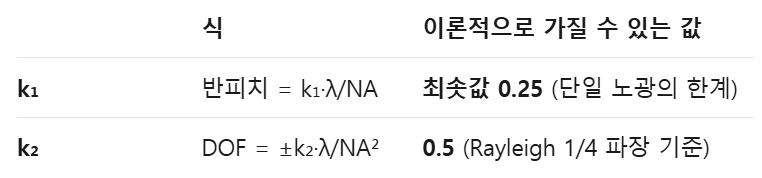
Q. Si wafer 위에 HMDS 처리를 하는 것인지, SiO₂ 위에 하는 것인지?
A. Si 위에서도, SiO₂ 위에서도 가능하다. 결국에 Si 위에서도 자연산화막이 생기고 그 위에서 H₂O와 반응하는 것이다. 화학반응은 Si-O-Si 에서 H₂O(공기 중의 수분)가 만나서 2 Si-OH 가 되는 반응이다.
그리고 HMDS는 Si-OH기가 반응해서 Si-O-Si(CH₃)₃를 만들어서 표면을 소수성으로 바꾼다.
Q. BARC의 정확한 역할이 무엇이며, 위치는 어디인지?
A. PR 코팅과 기판 사이에 놓는 반사방지막이다.
Q. 정상파가 표면에서 반사되면 정확히 어떻게 되는지?
A. 상쇄간섭과 보강간섭이 생긴다..?
Q. Negative PR에서 Swelling 현상이 일어나는 이유?
A. 가교가 덜 된 곳으로 현상액이 침투해서 부푸는 현상을 의미한다.
Q. ICP에서 코일에 의해 전기장, 자기장이 형성되는 원리?
A.